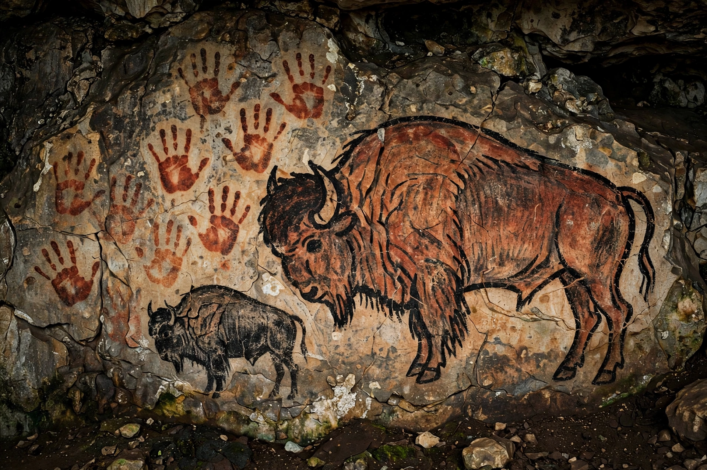

Prehistoric art is art produced in preliterate, prehistoric cultures beginning somewhere in the very late geological history, and generally continuing until that culture either develops writing or other methods of record-keeping, or makes significant contact with another culture that has.
The earliest art includes engraved ochre at Blombos Cave (~75,000 years ago), Venus figurines such as the Venus of Willendorf (~28,000 BP), and cave painting at Chauvet (~36,000 BP), Altamira, and Lascaux (~17,000 BP) depicting animals, hand stencils, and signs. Sulawesi cave art in Indonesia is at least 45,500 years old.
Pottery, megalithic monuments (Stonehenge, Newgrange), petroglyphs, and rock art worldwide — including Australian Aboriginal and San rock art continuing into historic times.
Debated as hunting magic, shamanism, notation, or social identity.
See also: Cave painting, Venus figurine